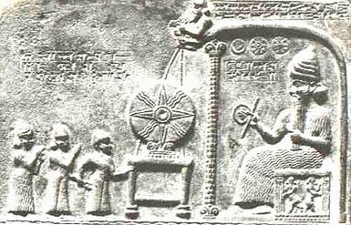

| inicio | | | | | @ | ||
Luz, calor, y el Escudo Nacional Argentino
El Escudo Nacional Argentino, aceptado oficialmente en 1813, tiene 32 rayos, 16 rectos y 16 curvos. Ese símbolo proviene de otro casi idéntico usado como pase revolucionario francés entre 1790 y 1793, veinte años antes de la Revolución de Mayo de 1810 en la que se reconoce el origen de la nacionalidad argentina. Aquel salvoconducto incluía las iniciales de la Biblioteca Real francesa, e incluía un sol incaico (de ocho rayos iguales), posiblemente por la aspiración revolucionaria de que las colonias de España tuviesen gobiernos autóctonos.
Quiero creer que los rayos rectos de nuestro Escudo representan la luz solar, y los ondulados como llamas, el calor que recibimos del astro.
En la representación del Sol egipcio los rayos solares terminan en manos que tocan o acarician, curiosa representación táctil y no visual.
El Sol sumerio también separaba la luz del calor, con rayos rectos que representan la primera, y ondulados para el segundo (vean, por favor, la figura al pie). Lo que hoy se acepta, en cambio, es que el Sol emite partículas y radiaciones electromagnéticas. Todas ellas calientan; esto es, transmiten calor. La mitad de esas ondas, aproximadamente y en términos de energía, las percibimos con el ojo. La otra mitad constituye, casi totalmente, radiación infrarroja que calienta, como la radiación visible, pero que los humanos no vemos. Hay una pequeña fracción de radiación ultravioleta que también calienta como las otras, y que tampoco nos resulta visible.
Los insectos ven una parte de la radiación ultravioleta del Sol; algunos peces, la infrarroja.
En delicious.com/agusrela hay un enlace a una presentación de imágenes sobre algunos aspectos físicos de la luz.
Infrarrojo significa por debajo del rojo; ultravioleta, por encima. Si se dispersa la radiación solar con un prisma y se pone un termómetro en cada color, se mide un ascenso de la temperatura, y lo mismo ocurre si se coloca el instrumento un poco arriba y un poco abajo de lo que se ve. Si en 1800 Sir William Herschel hubiera invertido el prisma (con bastante incomodidad experimental), hoy los nombres de esas radiaciones serían ultrarroja e infravioleta.

| Publicado originalmente en http://www.elistas.net/lista/divagaciones/archivo/indice/41/msg/57/. Se permite su reproducción citando la fuente. Última actualización nov-2017. Buenos Aires, Argentina. |